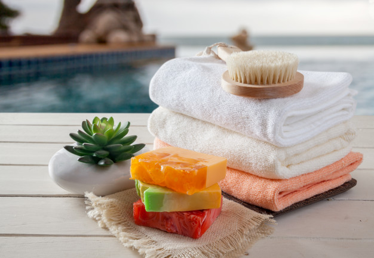

Información

Una empresa mexicana dedicada a la elaboración de jabones artesanales con productos 100% naturales de la más alta calidad, brindando propiedades y beneficios para la piel de toda la familia.
Los jabones artesanales son aquellos que se hacen de forma casera y que llevan todo tipo de ingredientes naturales. Cada vez son más las personas que optan por tener jabones artesanales con estupendas propiedades en su hogar, ya que pueden aportar mucho a nuestra belleza. Es por eso que hay que saber cómo se hacen y qué clase de jabones se pueden encontrar. Lo bueno de hacer jabones artesanales es que podemos adaptarlos a nuestras necesidades, escogiendo aquellos ingredientes que sean mucho más beneficiosos para nosotros. Es una forma de conseguir cosméticos personalizados en los que conozcamos cada ingrediente añadido. Elaborar jabones artesanos es una tendencia al alza. Es una actividad fácil, gratificante y ecológica, puesto que para ello se puede emplear el aceite de cocina usado. Con esencias, aceites y colores, para las manos, el cuerpo o el cabello, son muchas las combinaciones que se pueden realizar. Sin embargo, hay que tener en cuenta ciertas apreciaciones para confeccionarlos con total seguridad.